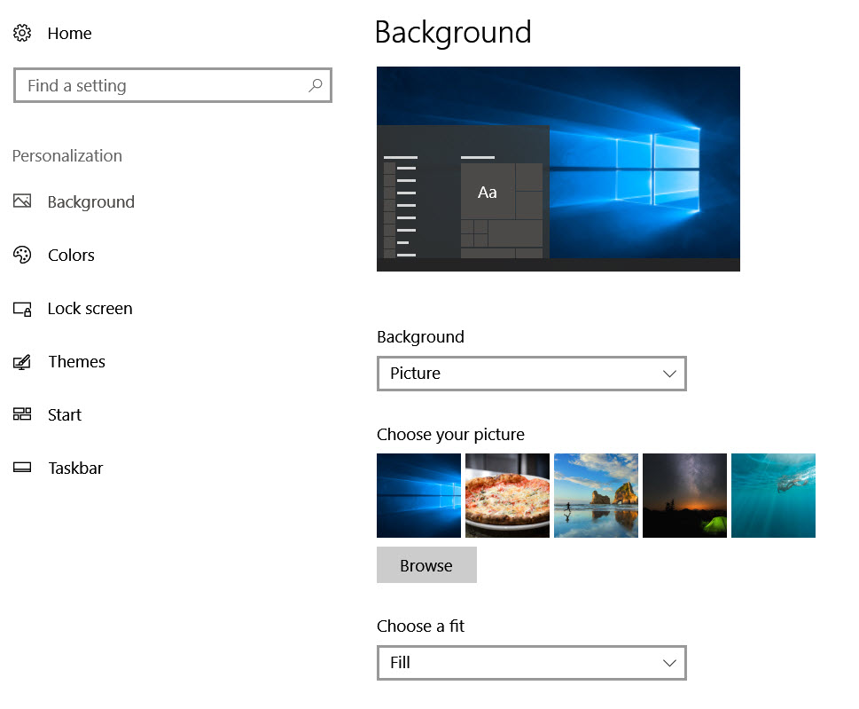
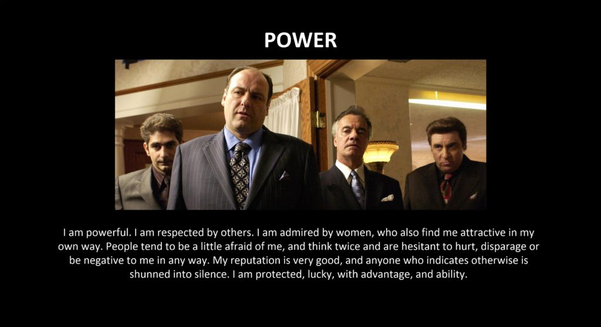
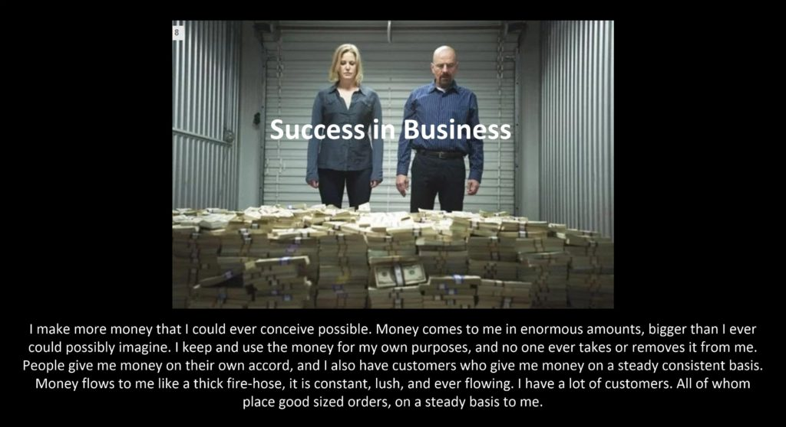
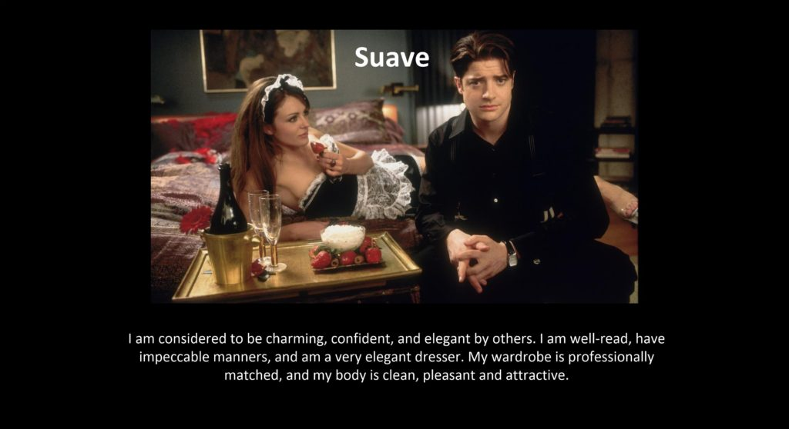
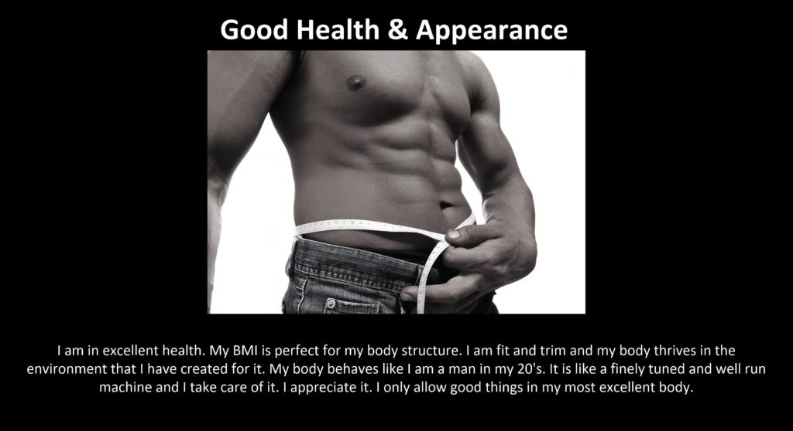
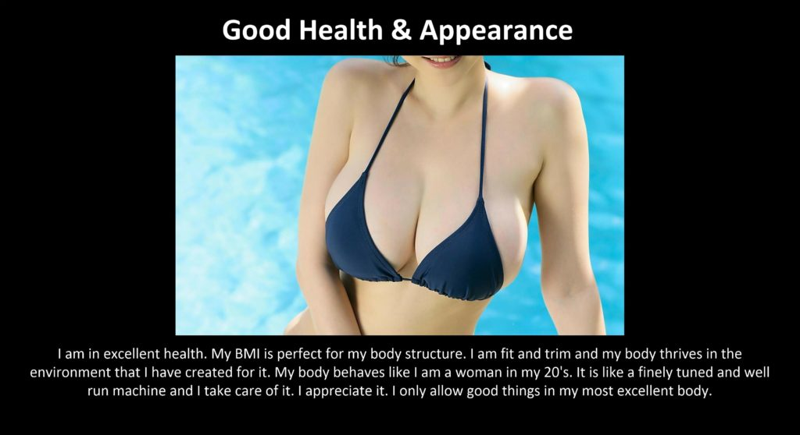
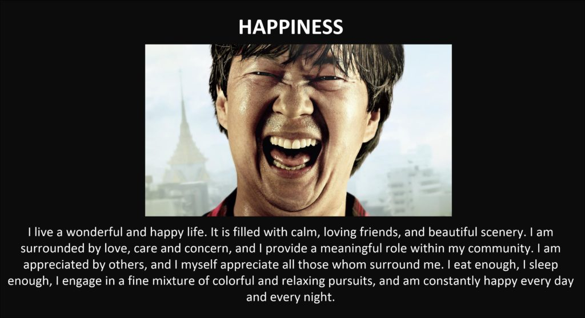
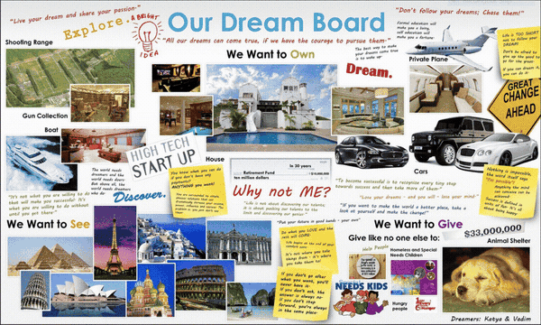

Here are some free Intention / Dream boards for your use. I would suggest that you copy the (presented image) photos to your computer and alter and customize it to fit your own personalized intentions. As such, please feel free to download and use to your heart’s content.
A dream board is a collage of images, pictures and written affirmations of the intentions and desires you wish to achieve. It helps you through visualization, thus activating the Universal Law of Attraction, or “likes attract like.” - 6 Tips for Making a Dream Board - Fit Bottomed Girls
The so called “Law of Attraction” is an element of the quantum physics law known as the “observer effect“. It has been repeatedly proven that a person’s thoughts alter the reality that they experience.
Though many people outside of MAJestic haven’t a clue as to the mechanism for this behavior.
Here are some attempts to explain this curious effect, and how a person can utilize it for their own personal use. If you are the kind of person that wants to know what all this is all about, and why it is important, these following links might be of help.
- Quantum Physics Explains How Your Thoughts Create Reality
- Part 1: Using Quantum Physics to…Manipulate Reality
- Consciousness Creates Reality – Quantum Physics Explains
- How Your Beliefs Create and Influence Reality – Robbie Holz
- QUANTUM-MIND The Mind Creates Reality
- Quantum Physics and Law of Attraction – What Is the Link
Now of course, us in MAJestic (well, at least those in my particular program) actually know how the universe works. We know how to manipulate it, and we do know the dangers of thought imposition.
How it works
Ah, I covered this subject in great detail in other posts.
However, for now, let’s just keep it simple. The universe is nothing like we think it is. Seriously. It does not resemble anything that is being taught in universities, or being promoted in any of the world’s religions.
Time is the movement of consciousness in and out of adjacent world-line variations.
The thoughts generated by the consciousness navigate the movement through these realities.
By controlling your thoughts, you can set destination realities for you to inhabit.
Which, by the way, means that you must be the pilot for your consciousness. You must keep your destination in mind, and your objectives clear. You have to avoid the “rocky shores” or disruptive thoughts. Thus you need to stay away from discordant news, and toxic people.
Dream Boards
I often go on the Internet and see examples of Intention / Dream boards. Their heart is in the right place but they are going about it wrong.
- Firstly, a “Dream Board” is one element of “Intention Projection”.
- Secondly, a “Dream Board” is useless without an associated prayer.
Also the theory behind how it works, as promoted on the internet, is really not accurate. To fully understand how an Intention / Dream board works, you need to understand just how our universe works. And, you know what, everyone has it wrong.
Prayer
Unless you are backing up your vision board with prayer, you will not derive full benefit from your dream board. It is your thoughts that define your reality. To navigate in and out of the realities that are constantly evolving and shifting around us, you must pilot your consciousness. You need to be the Captain of your consciousness.
To navigate, you need to control and master your thoughts. You need to do the following…
- Pray. These are thoughts that show your intentions, and desires.
- Create a vision board, or vision “splash screen” on your electronic media.
- Isolate yourself from negative media; news, music or movies.
- Isolate yourself from negative or disruptive people.
Use of the Vision Board / Splash Screen
You use the sample image as a desktop background. When ever you see the desktop image in the background you say your prayer associated with it. Thus is you want to use multiple backgrounds on a rotating basis, it becomes helpful to have a nice list of intention prayers that you read once a day.

Remember, that in order the intention board to work, you must recite your prayers out loud. (This is can be in a whisper, don’t you know.)
The longer you do this, the more “stable” your destination reality will become. However, there will come a point in time when you will “tire” of the prayers and dream boards. When this occurs, let it go and forget about it all. (It’s an important evolution that is established by your consciousness.)
You can do a different prayer and dream board, if you want. Just know that your intention will most certainly manifest.
The Things people wish for
I went on the handy dandy internet, and researched the things that most people wish for. Then I compiled them into a list and I am presenting intentions splash screens for each item on the list. Please consider these splash screens as an idea from which you can base your very own intention splash photos off of. Or use them raw as shown. It’s all up to you.
The Samples
The samples provided are just that. Samples. If you want to use them, feel free, but you MUST include an associated daily prayer with them.
Also note, that providing the samples here does not mean that I agree with the thought projections. Some of the samples offer vices, and other elements that do not fit my personal preferences. They are offered as suggestions for you the reader to base your own dream boards on.
Please take note that all these images and dream board splashes are made using the Microsoft Visio application. It is amazingly easy to use and simple. You just create a picture and add other pictures and text to your desired image.
Further, please take note that there is a trade off between a singular image with prayer, and a collage of images. A group of images will offer the person a greater degree of latitude and versatility in how the intention manifests. This latitude enables the manifestation to occur quicker. A singular image properly prayed for with strong intentions take much longer to manifest, but the results are more exacting.
Here we provide (mostly) singular images for your study and enjoyment.
Power
This intention desktop “splash” is related to POWER.
If you are desirous of increasing your apparent power within the reality that you inherit, then this image is for you. You are free to use it as is, or make your own along these lines. Alternatively, you can fill the entire image screen with smaller images that illustrate the kinds of power that you might wish to evoke.

Please note that you must use the following dialog in your prayers associated with this image…
I utilize the desktop image display on my computer to help cultivate the reality that my world-line is. In all cases, the dominant male figure portrayed in the image(s) represent myself. Images that portray mafia figures, or "bad people" portray myself in similar roles of power. They do NOT, however, manifest these kinds of people arrayed against me.
If you do not take care in your prayers, and in the application of the desktop display intention splash, it could easily “backfire” against you. Therefore, it is critically important for you to have a very clear and well defined image intention with an associated prayer.
After all, unless you are careful on how your thoughts manifest, you might end up having this crew come a knockin’ at your door…
Success in business
Again, here is a a different intention desktop splash. This is for people who are desirous of having a very successful business, and the rewards that come with it.

Again, it’s not enough just to use this image as a desktop background display. You need to associate it with a prayer. I would suggest that what ever prayer that you utilize, that you incorporate the following prayers / affirmations…
I utilize the desktop image display on my computer to help cultivate the reality that my world-line is. In all cases, the dominant male figure portrayed in the image(s) represent myself. Images that portray "bad people" portray myself in similar roles of power. They do NOT, however, manifest these kinds of people arrayed against me.
Suave
This is for you men who desire to be considered charming, confident, and elegant by others. Whether that is members of the other sex (women) or men, it does not matter.
charming · sophisticated · debonair · urbane · worldly · worldly-wise · polished · refined · poised · self-possessed · dignified · civilized · gentlemanly · gallant · smooth · smooth-talking · smooth-tongued · silver-tongued · glib · polite · well mannered · civil · courteous · affable · tactful · diplomatic · slick · cool · mannerly

And again, you must associate this image display with your prayers…
I utilize the desktop image display on my computer to help cultivate the reality that my world-line is. In all cases, the dominant male figure portrayed in the image(s) represent myself. The manifestation of this reality is gradual and safe and is in alignment with my deepest desires.
Good Health
Good health is something that we take for granted, and it isn’t until we get older when we start to panic at how our bodies age. There are things that we can do, of course. We can eat better, stay away from bad people and negative thoughts, and do some moderate exercise.
Also we must not neglect the role that good, directed thoughts play in shaping our life.
While you cannot simply wish or pray to be healthy, it can help assist in the movement of world-line selection towards the manifestation of your desires. The formula works a little like this…
Modest physical efforts + strong directed thoughts = Attainment
Here is a nice splash image for your desktop. In all cases laid out here, from the Power to the Fame, you MUST provides some kind of minimum physical action from which the desired world-lines can manifest.
- Wishing for something to happen = nothing will happen.
- Physically working for things = maybe might happen.
- Directed thoughts for things = a possibility can happen.
But… you should take careful note…
- Physically working towards things + Directed thoughts = cause your desires to manifest.
Please kindly keep that in mind when you utilize these desktop displays and splash screens. These intention boards are only part of a much more inclusive system that requires your participation to work.
You can manifest the world-lines that will be favorable to your intentions, and thus they will appear to manifest for you.
To put it in another way, laying on a couch / sofa eating potato chips and just leaving a intention dream canvas splash display rotate passively on the computer will result in NOTHING.
You must pump your thoughts full of directed thoughts, you must use the desktop display and view it from time to time to refresh your imagery, and you must do a moderate amount of physical action to generate a baseline from which your thoughts can manifest upon.
I have generated two splash intention dream canvas. One is for a man and the other is for a woman. Those of you who are of confused gender, you can follow the guidelines to create your very own specialized splash screen.
Men

Woman

And do not forget to add this prayer…
I utilize the desktop image display on my computer to help cultivate the reality that my world-line is. In all cases, the dominant figure portrayed in the image(s) represent myself.
Fame
The desire for fame is one of the most popular desires that people have. Yet, it’s perplexing why this is. Personally, I think that it is rather silly. Why do you want fame? To have followers, groupies or get offered free sex on demand?
People, if that is what you want, then you just go ahead and ask for it directly. If you want to have loads of sex with strangers who are enraptured with you, then ask for that in your intention prayers. You don’t need to ask for “fame”.
The problem with fame is “thought imposition”. The associated thoughts and quantum environment associated with others will severely influence your life. Trust me, you DO NOT want large groups of people thinking negatively about you. Or, even if it is positive, these thoughts can severely impact your ability to direct your own thoughts.
Never the less, I am placing the free desktop splash photo for those desirous of “Fame” here. In every case, you absolutely MUST associate it with the following affirmation / prayer.
I utilize the desktop image display on my computer to help cultivate the reality that my world-line is. In all cases, the dominant male figure portrayed in the image(s) represent myself. The manifestation of this reality is gradual and safe and is in alignment with my deepest desires. However, at any event, the manifestation of fame as pictured will be positive in every way, and will not have any negative connotations or spawn negative associated events.
Here’s my suggested image desktop splash intention photo;
Sex
Sex. It’s a biological driven human attribute. If you do not have the desire to reproduce, or at least go through the motions of reproducing, then you are not living life. All humans desire sex.
It might not be politically correct, but that is the way it is.
Which is one of the reasons why tyrannical governments ban vices, such as sex out of marriage in order to control people. It is a very common and human element that is very easy to use to control others with.
As are other things, like mind altering substances (alcohol) and things that are fun. It's a way of controlling people.
“Everything I love is illegal, banned or dangerous.”
When constructing you very own dream splash canvas, you can be very generous with the images used. However, take most special attention to their selection.
Improperly selected images, and splash screens without a detailed prayer / intention affirmation can easily result in conditions, situations and environments that you might find undesirable. Be very careful, precise and exact when selecting the images that you wish to use.
Happiness
The reader will notice that all of the images depict people and are representative of situations that people are in. That’s the way a dream / intention canvas works.
Picture and image the situations.
Do not image things.
You cannot display pictures of money and expect that it is to be associated with you having lots of money in your wallet. Instead, it is just a picture of an item. And you, constantly seeing that item, turns it into a kind of world-line scenery; Something that might lie around you, but not anything that you are associated with.
Not exactly what you want.
You see this all the time. People set up dream intention boards with nice expensive cars, pictures of houses, and images of a lot of nice things. They will include words that describe what they want to accomplish in their life. While it will contribute to the world-line direction that the creator intended, it will be done so inefficiently. You need to explicitly map out your desires and intentions and navigate properly in a very careful manner.
After all, you don’t want to make the same kinds of mistakes that our hero Elliot made in the movie “Bedazzled“, do you?
Elliot Richards (Brendan) would give anything to have Allison Gardner (Frances O'Connor) in his life, or so he says. Who should overhear? The devil (Elizabeth Hurley) of course. She offers him "seven absolutely fabulous wishes for one piddling little soul". Only Elliot finds out that you don't always get what you wish for.
The image you use, or the images you select MUST have a special meaning and association with you personally. Which is why many intention / dream splash screen canvases must be made intentionally for your own wishes and desires, as well as to have a prayer dialog that you must recite daily that will reset your thought direction, for world-line navigation, properly.
Here is a sample splash screen for a Happiness directed intention.

Wine and Cats
The most effective intention splash screens are those that represent people, and actions. However, you the reader should note that there are other techniques that can be used in a dream splash canvas. Here we explore one such concept.
Here is a splash screen for a person who wants a life filled with wine and plenty of kitty-cat friends…
There are no limits
There are really no limits to the direction that you want your life to evolve into. You simply think about your goals and dreams, all the time, while also removing all the nonsense from others, the news, and other’s manufactured problems. Stay pure, and you will walk the path to your deepest desires.
You can use many clusters of pictures
Many people create an Intention / Dream board that they place on their wall. This is often filled with photographs and images that were cut out of magazines. Every time they see this board, they are instantly reminded of their goals and dreams, and thus it serves it’s most exacting purpose.
In today’s computerized age, I suggest using the computer to do the same thing, and while my examples have one singular photo on it, in my own personal case, I use multiple images myself, creating a collage.
Here is an example of a “fairly decent” dream board. They use imagery that is important to them, and use words to specify the purpose and utility for the images.

You see, everyone is different.
We all have different desires, goals, needs, wants and interests. So each dream splash screen will be different for different people. And, while I argue that you need to let the intention splash screen be a part of a tool kit for manifesting your reality, how you use the tools will depend on your own experiences, lifestyle and needs.
Here’s another example.
Warnings
When you get on the internet, you will see all kinds of examples of people describing their intention / dream boards. You will also find many that monetize this effort.
Do not fall for that trap. The United States has become one great big vending machine and the people are the commodity.
Keep this most important fact in mind. You do not need to pay anyone for anything regarding how you think.
Also… Your thoughts are private.
We have come to accept the idea that you can police discourse on the internet, that the government agencies can extract history, reasoning, and behaviors from you at will, and that your thoughts are subject to scrutiny.
That is false.
Not only is it all against the 1st, 4th and 9th amendments to the United States Constitution, but it is a fundamental nature of yourself as a human. Privacy is a human need.
No. The "elected" officials in the United States are NOT doing their job, nor have they been since the last 150 years or so. But that is a subject for another time.
You need NEVER justify why you desire something to manifest in your life. It is secret and only between you and your God.
Everyone’s mind works differently
When I use the term “mind” I am referring to HOW the consciousness implants thoughts into the brain. It also includes how the brain reacts to the physical stimulus that surrounds it in this reality (that it inhabits).
Everyone’s mind works differently.
Oh we are often under the impression that while there might be deviance in thoughts from the baseline “normal”. That is all false. Really, really false. We all think differently. Do not assume that others will understand you or accept your thought processes. They won’t. It’s a foregone conclusion and do not even bother trying to explain anything.
Do not assume anything. Live your own life to the best of your ability. Do not care, or give any consideration to what others think of you, your actions or your thoughts.
Conclusion
Creating an inspiration or dream board is a fundamental technique for a person to pilot their life to manifest their desires.
It works on the quantum physics principle of the observer effect.

Why it works is not well understood outside of MAJestic. That is because the vast bulk of the world has absolutely zero concept of how the universe works. However, we in MAJestic (well at least those in my sub-project) know quite well the mechanism involved.
It’s simple really.
There is no singular fixed reality. Instead there are a near infinite number of realities.
Our consciousness moves through each one, forming a path.
This path is called time.
We travel at a rate, more or less, around 4Hz.
The selection of the next reality for us to inhabit is determined by our thoughts. Typically, we migrate to realities that are defined by our thoughts that are influenced by the world around us. This can be dangerous and evil people use media to manipulate, and thus cause our travel path to bend and twist towards realities that we might not want to participate in.
Therefore, to manifest the life that we desire to live, we need to do three things…
- Turn off all negative, distracting, and disruptive thoughts that surround us.
- Stay away from people with strong thoughts and personalities that are contrary to our desires.
- Focus our thoughts on our ultimate goals.
A vision dream (intention) splash desktop will help accomplish this. Provided that it is linked to a daily prayer that includes the subject matter listed.
Related Links
Here’s some other related links for the interested fellow or chick.


A little bit more background for the more scientifically inclined…

Ah, and why I ended up learning the utility of all this as part of MAJestic. Here is the end ball game…

Final Note
This is how it works people. And, at that, perhaps this is my MAJestic gift to the world.
The things we did with our extraterrestrial benefactors was intended to help sort out the sentience selection for the human species. It seems to me that it is still in flux, but that need not concern you all. What you should be concerned with is how you can truly embrace the life that we live and customize it to fit your ultimate desires.
Being able to control our thoughts is the FIRST step in mastery of our life. You can do this through [1] prayer, and [2] visualization.
There is a reason why ritual is important. For ritual permits proper direct visualization so that prayer can be conducted without distraction.
Posts Regarding Life and Contentment
Here are some other similar posts on this venue. If you enjoyed this post, you might like these posts as well. These posts tend to discuss growing up in America. Often, I like to compare my life in America with the society within communist China. As there are some really stark differences between the two.


More Posts about Life
I have broken apart some other posts. They can best be classified about ones actions as they contribute to happiness and life. They are a little different, in subtle ways.


Funny Pictures

Be the Rufus – Tales of Everyday Heroism.